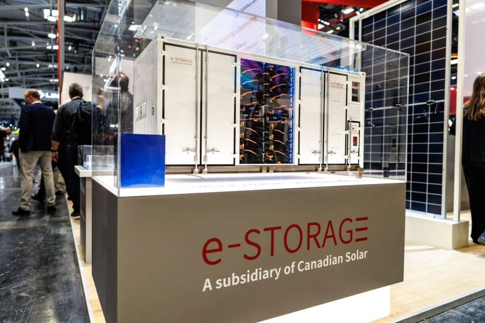
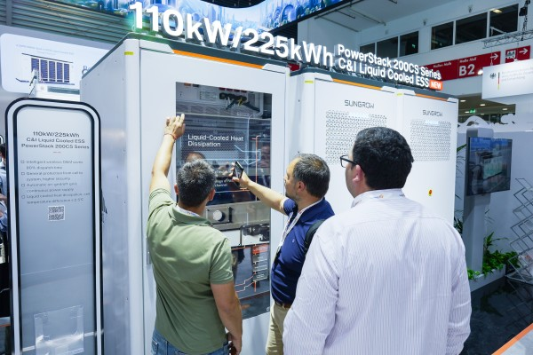
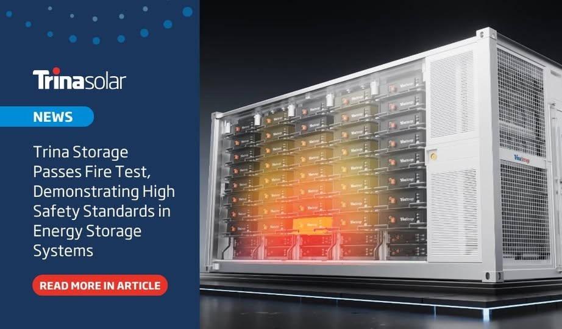
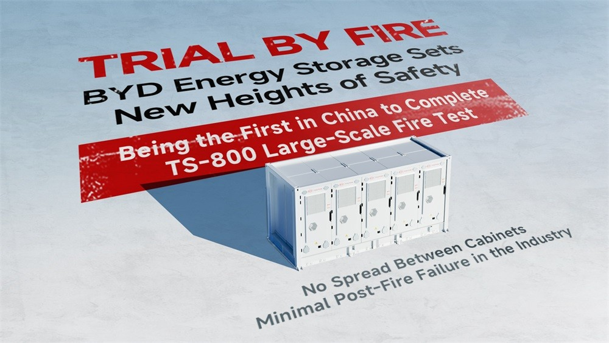
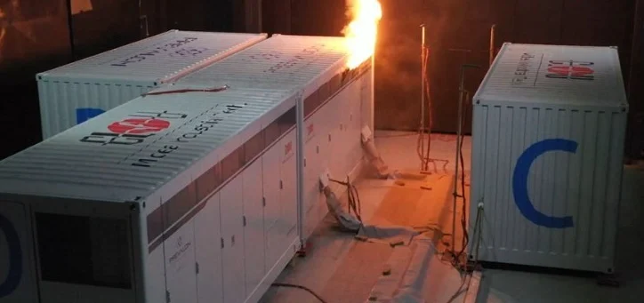
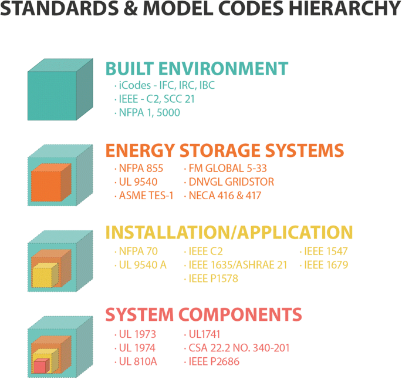
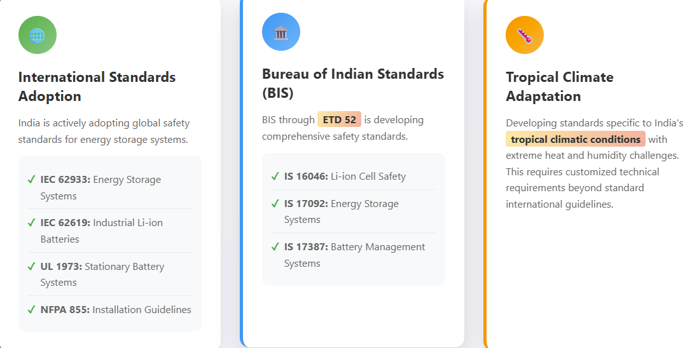
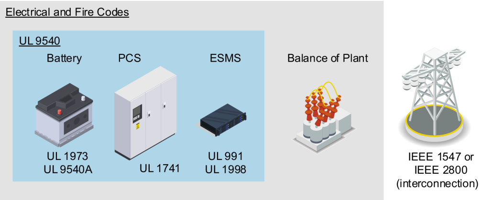

The exponential growth of the energy storage industry, driven by the imperative of renewable energy integration, has brought with it a heightened focus on safety. As Battery Energy Storage Systems (BESS) become larger and more ubiquitous, the potential for thermal runaway and subsequent fire incidents presents a critical challenge.
Since 2024, a significant trend has emerged: numerous leading companies are actively conducting rigorous large-scale fire experiments, signaling a collective commitment to safety and a strategic move to differentiate themselves in an increasingly competitive market. This proactive approach to fire testing is not just about compliance; it's about building a robust safety barrier that aims to secure the future of energy storage globally, with prominent implications for markets in China, the US, and India.
Chinas Proactive Stance: Leading by Example
The narrative from China clearly demonstrates a front-running position in addressing energy storage safety. Despite a highly competitive and often "inward-looking" market, Chinese companies are recognizing that rigorous testing is a key differentiator. The industry has witnessed at least 15 energy storage fire incidents worldwide in 2024 alone, with an additional 9 in Q1 2025, underscoring the urgent need for enhanced safety measures.
e-STORAGE (Canadian Solar's Energy Storage Arm) stands out as a "performance dark horse." While the broader PV industry faced a "cold winter" in 2024, e-STORAGE leveraged its decade-long energy storage business to achieve remarkable growth, with shipments reaching 6.5 GWh – a staggering 505.28% year-on-year increase. This success is underpinned by a strong commitment to safety, exemplified by their SolBank 3.0 system successfully passing the Large-Scale Fire Testing (LSFT) under the stringent CSA C-800:25§9.7 standard.

This test, recognized for its rigor, evaluates the ability of a BESS unit to control fire spread to adjacent units following a complete internal combustion event, crucially preventing thermal runaway chain reactions. SolBank 3.0's success, coupled with its industry-first high-efficiency hybrid cooling technology and certifications like UL9540A heat spread and NFPA69 explosion-proof design, underscores Canadian Solar's leading position. With a historical backlog of 91 GWh (approximately $3.2 billion USD), their market influence is undeniable.
Beyond Canadian Solar, a growing list of Chinese powerhouses are conducting these critical combustion tests:
- Sungrow Power Supply, a pioneer in energy storage safety, proactively ignited a full-scale PowerTitan1.0 in June 2024, marking the world's first large-scale combustion test of an energy storage system – certified as an "industry milestone" by DNV. They followed this up with an even larger $30 million USD non-spread test on the 20 MWh PowerTitan2.0. These achievements have translated into significant market advantages, securing large orders globally.

- Trina Energy Storage demonstrated innovation with its Trinastorage Elementa 2, successfully achieving no re-ignition for 24 hours in its combustion test through a unique "aerosol fire extinguishing + water spray cooling" double-insurance system.

- BYD's MCCube energy storage product became the first in China to pass the CSA TS-800 large-scale fire test in December 2024, achieving the industry's narrowest failure range with no spread between cabinets.

- Huawei Digital Energy completed an extreme combustion test in February 2025, significantly increasing the number of thermal runaway cells beyond the UL9540A standard, showcasing their commitment to advanced safety through "positive pressure oxygen barrier + directional smoke exhaust technology."

These extensive tests by Chinese companies are not just about individual product validation; they are driving technological innovation across the industry, leading to advancements in thermal insulation, fire suppression, and explosion prevention. This proactive stance is building a high barrier for energy storage safety, differentiating products, and earning customer trust in a competitive market. It also provides critical data for the formulation and improvement of international and domestic safety standards.
The US Market: A Strong Foundation of Standards
The United States has long been a leader in developing comprehensive safety standards for various industries, and energy storage is no exception. The U.S. market relies heavily on a robust framework of codes and standards developed by organizations like the National Fire Protection Association (NFPA) and Underwriters Laboratories (UL).
Key US Standards and Requirements:
- NFPA 855: Standard for the Installation of Stationary Energy Storage Systems: This is the cornerstone standard, providing minimum requirements for mitigating hazards associated with ESS installations across various technologies, locations, sizes, and applications. It addresses crucial aspects like separation distances, fire suppression systems (e.g., sprinklers), ventilation, and emergency access protocols. The 2023 edition and upcoming 2026 edition are continuously evolving to incorporate best practices.
- UL 9540A: Test Method for Evaluating Thermal Runaway Fire Propagation in Battery Energy Storage Systems: This is perhaps the most critical test method for assessing fire safety. UL 9540A is specifically cited in NFPA 855 for large-scale fire testing and provides a methodology to evaluate the fire and explosion hazards at four levels: cell, module, unit, and installation. It does not certify products but provides essential data for designing safer BESS and for code compliance. Companies like Canadian Solar's e-STORAGE are actively testing against this standard to demonstrate compliance and safety to the U.S. market.
- UL 9540: Standard for Energy Storage Systems and Equipment: This standard covers the overall safety of the energy storage system, including the interaction of its components.
- Other relevant standards include UL 1973 (for batteries used in stationary applications), IEC 62933 (international framework), and various IEEE standards for grid interconnection.

The U.S. approach emphasizes safety by design, with stringent testing and certification processes required before technologies can be connected to the grid. There's a strong partnership between the energy storage industry and fire departments to ensure preparedness and response. While the Chinese companies are actively performing the tests to showcase advanced safety measures, their products entering the US market must meet or exceed these established American standards. The increasing number of Chinese companies passing these rigorous tests, like BYD's MCCube with CSA TS-800 (which is harmonized with North American standards like UL 9540A), indicates their strategic intent to penetrate the Western markets by aligning with their safety benchmarks.
Indias Growing Emphasis on Safety: A Developing Framework
India's energy storage market is rapidly expanding, driven by ambitious renewable energy targets and a burgeoning EV sector. While the framework for energy storage safety is still evolving compared to China and the US, the urgency to establish robust standards is well recognized.
Key Initiatives and Challenges in India:
- Adoption of International Standards: India is actively adopting relevant International Electrotechnical Commission (IEC) and Underwriters Laboratories (UL) standards for energy storage systems. Standards like IEC 62933 (for EES systems), IEC 62619 (for industrial lithium-ion batteries), and UL 1973 (for stationary batteries) are crucial references. NFPA 855 is also gaining traction as a guideline for installation.
Bureau of Indian Standards (BIS): The BIS, through its Electrotechnical Department (ETD) 52, is actively working to improve safety standards for ESS, battery management systems, and Li-ion cells. They have adopted national standards such as IS 16046 (Part 2):2018/IEC 62133-2:2017, IS 17092 for electrical energy storage systems, and IS 17387:2020 for BMS.
- Addressing Local Conditions: A key challenge for India is the need to develop and implement safety standards that are reflective of its tropical climatic conditions. Extreme heat and humidity can impact battery performance and safety, requiring specific technical requirements to be added to existing standards.

- Domestic Manufacturing Safety: As India's PLI schemes boost domestic ACC battery manufacturing, ensuring these local products meet stringent safety and quality standards becomes critical. This includes fire testing at various levels of production.
- Incident Learning and Regulation: Like other markets, India has experienced energy storage-related incidents. These events are driving policymakers and industry stakeholders to enhance regulations, focusing on fire and explosion prevention, adequate ventilation, and emergency response protocols.
- Collaboration: Effective implementation of safety measures requires collaboration between manufacturers, integrators, regulators, and emergency services.
While public announcements of large-scale fire tests by Indian companies are less frequent than those from China, it is understood that compliance with international and evolving national standards necessitates similar internal or third-party validation. Indian companies are increasingly integrating advanced thermal management, robust BMS, and fire detection/suppression systems into their designs, aligning with global best practices driven by tests like UL 9540A.
The Real Gold of Fire Testing: Building High Barriers for Safety
The widespread adoption of energy storage fire experiments, particularly by industry leaders, carries profound significance across several dimensions:
- Technological Innovation: Fire testing acts as a powerful catalyst for R&D. By revealing weak links in systems under extreme conditions, it drives the development of novel technologies, materials, and processes. Examples like Sungrow's nano-scale thermal insulation and Huawei's positive pressure oxygen barrier demonstrate how testing pushes boundaries, leading to breakthroughs in fire prevention, heat insulation, and explosion relief.
- Market Competition and Differentiation: In a highly competitive market, passing rigorous fire tests provides a crucial competitive edge. It allows companies to differentiate their products, build trust with customers, and secure large-scale projects. The GWh era of energy storage demands higher safety assurance, making tested products more desirable.

- Elevation of Industry Safety Standards: The testing practices and data collected by leading companies provide invaluable input for the formulation and continuous improvement of industry safety standards globally. As more companies participate, it creates a feedback loop that refines existing regulations (like NFPA 855 and UL 9540A) and prompts the development of new ones. This collaborative push fosters a safer ecosystem for the entire energy storage value chain.
- Regulatory Compliance and Global Harmonization: While large-scale fire testing may not yet be mandatory in all regions, international standards (e.g., NFPA 855, EU Battery and Waste Battery Regulations) are increasingly advocating for it. Domestic standards are also evolving, requiring companies to meet stringent compliance through rigorous testing, thereby promoting global harmonization in energy storage safety.
Conclusion: A Shared Global Imperative
The surge in energy storage fire experiments by major players, especially from China, marks a pivotal moment for the industry. It unequivocally demonstrates a collective commitment to safety as a paramount concern, moving beyond mere regulatory compliance to proactive excellence. This trend is not isolated but resonates across the global energy storage landscape, influencing markets in the US and India.
While the US benefits from a well-established regulatory framework and India is rapidly building its own, the real-world validation provided by these fire tests is forging a common, higher standard for safety worldwide. As energy storage systems become integral to our power infrastructure, this relentless pursuit of safety through innovation and rigorous testing will be the "real gold," ensuring reliability, building public trust, and ultimately accelerating the transition to a sustainable and secure energy future for all.